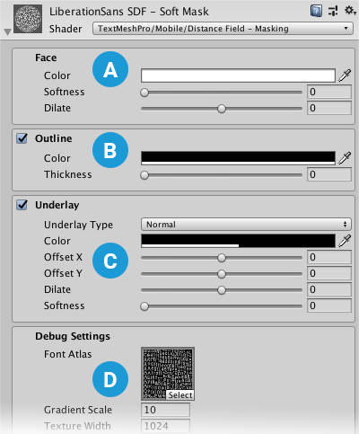
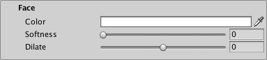
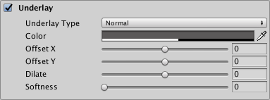
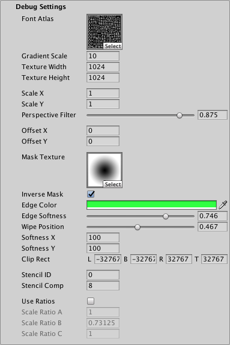

Distance Field 与 Distance Field Overlay 是 TextMesh Pro 有符号距离场（SDF）着色器的两个近乎相同的变体。Overlay 变体始终将 TextMesh Pro 对象绘制在场景中其他所有对象上方；普通 Distance Field 按场景的正常遮挡关系渲染，位于文本前面的对象会覆盖文本。

这两个变体都不受光照影响，不与场景灯光交互，但可以模拟局部方向光效果。
属性
Distance Field 和 Distance Field Overlay 着色器的属性完全相同，可在 TextMesh Pro 对象的 Inspector 中编辑。
属性分为多个区域；其中部分区域必须先启用，才能激活其属性组。

 字面（Face）: 控制文本的整体外观。
字面（Face）: 控制文本的整体外观。
 描边（Outline）: 为文本添加带颜色和／或纹理的描边。
描边（Outline）: 为文本添加带颜色和／或纹理的描边。
 底层效果（Underlay）: 在原始文本下方再渲染一层文本，例如用于添加投影。
底层效果（Underlay）: 在原始文本下方再渲染一层文本，例如用于添加投影。
 调试设置（Debug Settings）: 显示内部着色器属性，有时可用于排查问题。
调试设置（Debug Settings）: 显示内部着色器属性，有时可用于排查问题。
字面（Face）
字面属性控制了文本的整体外观。

| 属性： | 说明 |
|---|---|
| 颜色（Color） | 调整文本的字面颜色。 你在这里设置的值乘以顶点 颜色（Colors） 相乘；该顶点颜色在 TextMeshPro 组件中设置。 设置为白色以使用原始顶点颜色。 设为黑色可抵消顶点颜色。 同样，设置Alpha为 1 使用原始顶点颜色的Alpha,同时设置为 0 使原始顶点颜色中的 Alpha 不再起作用。 |
| 柔化（Softness） | 调整文本边缘的柔和程度。 数值为 0 会产生清晰的抗锯齿边缘。 数值大于 0 会使边缘越来越柔和／模糊。 此设置同时作用于文本字面和描边。 |
| 膨胀（Dilate） | 调整文本轮廓在字体以下资源中的位置： 距离场. 数值为 0 将轮廓放在渐变中点，对应原始字体的轮廓。 负值使字符变细，正值使字符变粗。 |
描边（Outline）
描边属性允许为文本添加描边并控制其外观。必须设置以下值后，描边才会可见： 厚度（Thickness） 值大于 0.

| 属性： | 说明 |
|---|---|
| 颜色（Color） | 调整文本描边的颜色。 |
| 厚度（Thickness） | 调整描边厚度，数值越大，线越粗。 描边沿文本轮廓绘制，一半厚度在轮廓内，另一半在轮廓外。 可通过调整以下属性，让描边进一步向内或向外移动： Face > Dilate（字面 > 膨胀） 属性中。 |
底层效果（Underlay）
Underlay 在原始文本下方额外渲染一层文本，可用于添加投影效果。

| 属性： | 说明 | |
|---|---|---|
| 底层效果类型（Underlay Type） | 选择要渲染的底层效果类型。 | |
| 无（None） | 不使用底层效果。 | |
| 常规（Normal） | 将底层效果呈现在原始文本下面。 产生标准的投影效果。 |
|
| 内部（Inner） | 反转底层效果，并使用原始文本对它进行遮罩，使其仅在原始字母轮廓内部可见。 产生类似透过镂空文字看到的投影效果。 要看到 内部（Inner） 底层效果时，必须将文本字面设为透明，即将 Alpha 设为 0. |
|
| 颜色（Color） | 设置底层效果文本的颜色.默认是半透明的黑色。 | |
| 水平／垂直偏移（Offset X/Offset Y） | 设置底层文本相对于原始文本的水平和垂直偏移。 例如，用底层效果创建投影时，可通过调整位置来表现特定光照方向。 |
|
| 膨胀（Dilate） | 调整底层文本轮廓在字体以下资源中的位置： 距离场. 数值为 0 将轮廓放在渐变中点，对应原始字体的轮廓。 负值使字符变细，正值使字符变粗。 |
|
| 柔化（Softness） | 调整底层文本边缘的柔和程度。 数值为 0 会产生清晰的抗锯齿边缘。 数值大于 0 会使边缘越来越柔和／模糊。 用底层效果创建投影时，可通过此设置让阴影边缘更硬或更柔和。 |
调试设置（Debug Settings）
调试区域包含定义和控制遮罩的选项，也提供部分着色器内部属性，便于排查问题。

| 属性： | 说明 | |
|---|---|---|
| 字体图集（Font Atlas） | 指向字体资源所使用的图集纹理。 | |
| 渐变缩放（Gradient Scale） | 表示字体以下数据的扩展范围： 有符号距离场. 这决定了以下材质属性的有效范围，例如 Outline > Width（描边宽度）（Outline > Width） 和 Underlay > Offset X/Y（底层偏移）（Underlay > Offset X/Y）. 此值等于 Padding + 1，其中 Padding 是 内边距 在创建字体资源时设置的值。 注意： 此值仅用于调试，不应手动编辑。 |
|
| 纹理宽度／高度（Texture Width/Texture Height） | 显示以下设置中指定的纹理图集宽度和高度： 图集分辨率（Atlas Resolution） ，这些值在创建字体资源时确定。 | |
| Scale X／Scale X（原文字段名称如此） | 设置 SDF 缩放的乘数。 设为 0时，字符会渲染成块状。 负值使字符更柔和，正值使字符看起来更锐利。 |
|
| 透视过滤（Perspective Filter） | 使用透视摄像机时，调整此设置，使文本在以较大倾斜角度观察时看起来更柔和。 默认值 0.875 在多数情况下足够。 使用正交摄像机时，将此值设为 0. |
|
| 水平／垂直偏移（Offset X/Offset Y） | 在 X 和 Y 方向偏移各字符的顶点位置。 可通过脚本改变这些值，模拟爬行或滚动效果。 |
|
| 遮罩纹理（Mask Texture） | 选择用作遮罩的纹理文件。黑白图像效果最好。 默认情况下，图像的黑色区域遮住文本，白色区域显示文本。 |
|
| 反转遮罩（Inverse Mask） | 反转遮罩：图像中的白色区域遮住文本，黑色区域显示文本。 | |
| 边缘颜色（Edge Color） | 使用指定颜色为遮罩边缘着色。 边缘越柔和，着色区域越大。 |
|
| 边缘柔化（Edge Softness） | 调整遮罩边缘的软硬程度。 数值为 0.5 按原样应用遮罩。更大值使边缘柔化，更小值使边缘锐化。 |
|
| 擦除位置（Wipe Position） | 控制文本被遮罩的程度。 数值为 0.5 严格按照以下设置对文本应用遮罩： 遮罩纹理（Mask Texture）. 数值为 0 完全显示文本（不应用遮罩）。 数值为 1 隐藏文本（所有文本均被遮罩）。 |
|
| Softness X／Softness Y（水平／垂直柔化） | 在任一轴上对文本应用软遮罩。 增加 X 值，在文本左右两侧添加软遮罩。增大 Y 值，在文本顶部和底部添加软遮罩。 此遮罩会与以下选项定义的遮罩叠加： 遮罩纹理（Mask Texture）. |
|
| 裁剪矩形（Clip Rect） | Clip Rect 定义遮罩矩形的左（L）、下（B）、右（R）和上（T）边界的世界空间坐标。 通常由以下组件自动设置： 二维矩形遮罩（2D RectMask）。不过，使用普通的 TextMeshPro 组件时，可通过此属性设置或控制遮罩区域。 |